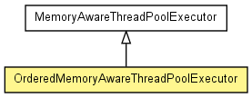

org.jboss.netty.handler.execution
Class OrderedMemoryAwareThreadPoolExecutor
java.lang.Object
 java.util.concurrent.AbstractExecutorService
java.util.concurrent.ThreadPoolExecutor
org.jboss.netty.handler.execution.MemoryAwareThreadPoolExecutor
org.jboss.netty.handler.execution.OrderedMemoryAwareThreadPoolExecutor
java.util.concurrent.AbstractExecutorService
java.util.concurrent.ThreadPoolExecutor
org.jboss.netty.handler.execution.MemoryAwareThreadPoolExecutor
org.jboss.netty.handler.execution.OrderedMemoryAwareThreadPoolExecutor
- All Implemented Interfaces:
- Executor, ExecutorService
public class OrderedMemoryAwareThreadPoolExecutor
- extends MemoryAwareThreadPoolExecutor

A MemoryAwareThreadPoolExecutor which makes sure the events from the
same Channel are executed sequentially.
NOTE: This thread pool inherits most characteristics of its super
type, so please make sure to refer to MemoryAwareThreadPoolExecutor
to understand how it works basically.
Event execution order
For example, let's say there are two executor threads that handle the events
from the two channels:
-------------------------------------> Timeline ------------------------------------>
Thread X: --- Channel A (Event A1) --. .-- Channel B (Event B2) --- Channel B (Event B3) --->
\ /
X
/ \
Thread Y: --- Channel B (Event B1) --' '-- Channel A (Event A2) --- Channel A (Event A3) --->
As you see, the events from different channels are independent from each
other. That is, an event of Channel B will not be blocked by an event of
Channel A and vice versa, unless the thread pool is exhausted.
Also, it is guaranteed that the invocation will be made sequentially for the
events from the same channel. For example, the event A2 is never executed
before the event A1 is finished. (Although not recommended, if you want the
events from the same channel to be executed simultaneously, please use
MemoryAwareThreadPoolExecutor instead.)
However, it is not guaranteed that the invocation will be made by the same
thread for the same channel. The events from the same channel can be
executed by different threads. For example, the Event A2 is executed by the
thread Y while the event A1 was executed by the thread X.
Using a different key other than Channel to maintain event order
OrderedMemoryAwareThreadPoolExecutor uses a Channel as a key
that is used for maintaining the event execution order, as explained in the
previous section. Alternatively, you can extend it to change its behavior.
For example, you can change the key to the remote IP of the peer:
public class RemoteAddressBasedOMATPE extends OrderedMemoryAwareThreadPoolExecutor {
... Constructors ...
@Override
protected ConcurrentMap<Object, Executor> newChildExecutorMap() {
// The default implementation returns a special ConcurrentMap that
// uses identity comparison only (see IdentityHashMap).
// Because SocketAddress does not work with identity comparison,
// we need to employ more generic implementation.
return new ConcurrentHashMap<Object, Executor>
}
protected Object getChildExecutorKey(ChannelEvent e) {
// Use the IP of the remote peer as a key.
return ((InetSocketAddress) e.getChannel().getRemoteAddress()).getAddress();
}
// Make public so that you can call from anywhere.
public boolean removeChildExecutor(Object key) {
super.removeChildExecutor(key);
}
}
Please be very careful of memory leak of the child executor map. You must
call removeChildExecutor(Object) when the life cycle of the key
ends (e.g. all connections from the same IP were closed.) Also, please
keep in mind that the key can appear again after calling removeChildExecutor(Object)
(e.g. a new connection could come in from the same old IP after removal.)
If in doubt, prune the old unused or stall keys from the child executor map
periodically:
RemoteAddressBasedOMATPE executor = ...;
on every 3 seconds:
for (Iterator<Object> i = executor.getChildExecutorKeySet().iterator; i.hasNext();) {
InetAddress ip = (InetAddress) i.next();
if (there is no active connection from 'ip' now &&
there has been no incoming connection from 'ip' for last 10 minutes) {
i.remove();
}
}
If the expected maximum number of keys is small and deterministic, you could
use a weak key map such as ConcurrentWeakHashMap
or synchronized WeakHashMap instead of managing the life cycle of the
keys by yourself.
- Version:
- $Rev: 2308 $, $Date: 2010-06-17 23:23:59 +0900 (Thu, 17 Jun 2010) $
- Author:
- The Netty Project, Trustin Lee, David M. Lloyd (david.lloyd@redhat.com)
|
Constructor Summary |
OrderedMemoryAwareThreadPoolExecutor(int corePoolSize,
long maxChannelMemorySize,
long maxTotalMemorySize)
Creates a new instance. |
OrderedMemoryAwareThreadPoolExecutor(int corePoolSize,
long maxChannelMemorySize,
long maxTotalMemorySize,
long keepAliveTime,
TimeUnit unit)
Creates a new instance. |
OrderedMemoryAwareThreadPoolExecutor(int corePoolSize,
long maxChannelMemorySize,
long maxTotalMemorySize,
long keepAliveTime,
TimeUnit unit,
ObjectSizeEstimator objectSizeEstimator,
ThreadFactory threadFactory)
Creates a new instance. |
OrderedMemoryAwareThreadPoolExecutor(int corePoolSize,
long maxChannelMemorySize,
long maxTotalMemorySize,
long keepAliveTime,
TimeUnit unit,
ThreadFactory threadFactory)
Creates a new instance. |
| Methods inherited from class org.jboss.netty.handler.execution.MemoryAwareThreadPoolExecutor |
beforeExecute, decreaseCounter, doUnorderedExecute, execute, getMaxChannelMemorySize, getMaxTotalMemorySize, getObjectSizeEstimator, increaseCounter, remove, setMaxChannelMemorySize, setMaxTotalMemorySize, setObjectSizeEstimator, terminated |
| Methods inherited from class java.util.concurrent.ThreadPoolExecutor |
afterExecute, allowCoreThreadTimeOut, allowsCoreThreadTimeOut, awaitTermination, finalize, getActiveCount, getCompletedTaskCount, getCorePoolSize, getKeepAliveTime, getLargestPoolSize, getMaximumPoolSize, getPoolSize, getQueue, getRejectedExecutionHandler, getTaskCount, getThreadFactory, isShutdown, isTerminated, isTerminating, prestartAllCoreThreads, prestartCoreThread, purge, setCorePoolSize, setKeepAliveTime, setMaximumPoolSize, setRejectedExecutionHandler, setThreadFactory, shutdown, shutdownNow |
OrderedMemoryAwareThreadPoolExecutor
public OrderedMemoryAwareThreadPoolExecutor(int corePoolSize,
long maxChannelMemorySize,
long maxTotalMemorySize)
- Creates a new instance.
- Parameters:
corePoolSize - the maximum number of active threadsmaxChannelMemorySize - the maximum total size of the queued events per channel.
Specify 0 to disable.maxTotalMemorySize - the maximum total size of the queued events for this pool
Specify 0 to disable.
OrderedMemoryAwareThreadPoolExecutor
public OrderedMemoryAwareThreadPoolExecutor(int corePoolSize,
long maxChannelMemorySize,
long maxTotalMemorySize,
long keepAliveTime,
TimeUnit unit)
- Creates a new instance.
- Parameters:
corePoolSize - the maximum number of active threadsmaxChannelMemorySize - the maximum total size of the queued events per channel.
Specify 0 to disable.maxTotalMemorySize - the maximum total size of the queued events for this pool
Specify 0 to disable.keepAliveTime - the amount of time for an inactive thread to shut itself downunit - the TimeUnit of keepAliveTime
OrderedMemoryAwareThreadPoolExecutor
public OrderedMemoryAwareThreadPoolExecutor(int corePoolSize,
long maxChannelMemorySize,
long maxTotalMemorySize,
long keepAliveTime,
TimeUnit unit,
ThreadFactory threadFactory)
- Creates a new instance.
- Parameters:
corePoolSize - the maximum number of active threadsmaxChannelMemorySize - the maximum total size of the queued events per channel.
Specify 0 to disable.maxTotalMemorySize - the maximum total size of the queued events for this pool
Specify 0 to disable.keepAliveTime - the amount of time for an inactive thread to shut itself downunit - the TimeUnit of keepAliveTimethreadFactory - the ThreadFactory of this pool
OrderedMemoryAwareThreadPoolExecutor
public OrderedMemoryAwareThreadPoolExecutor(int corePoolSize,
long maxChannelMemorySize,
long maxTotalMemorySize,
long keepAliveTime,
TimeUnit unit,
ObjectSizeEstimator objectSizeEstimator,
ThreadFactory threadFactory)
- Creates a new instance.
- Parameters:
corePoolSize - the maximum number of active threadsmaxChannelMemorySize - the maximum total size of the queued events per channel.
Specify 0 to disable.maxTotalMemorySize - the maximum total size of the queued events for this pool
Specify 0 to disable.keepAliveTime - the amount of time for an inactive thread to shut itself downunit - the TimeUnit of keepAliveTimethreadFactory - the ThreadFactory of this poolobjectSizeEstimator - the ObjectSizeEstimator of this pool
newChildExecutorMap
protected ConcurrentMap<Object,Executor> newChildExecutorMap()
getChildExecutorKey
protected Object getChildExecutorKey(ChannelEvent e)
getChildExecutorKeySet
protected Set<Object> getChildExecutorKeySet()
removeChildExecutor
protected boolean removeChildExecutor(Object key)
doExecute
protected void doExecute(Runnable task)
- Executes the specified task concurrently while maintaining the event
order.
- Overrides:
doExecute in class MemoryAwareThreadPoolExecutor
shouldCount
protected boolean shouldCount(Runnable task)
- Description copied from class:
MemoryAwareThreadPoolExecutor
- Returns
true if and only if the specified task should
be counted to limit the global and per-channel memory consumption.
To override this method, you must call super.shouldCount() to
make sure important tasks are not counted.
- Overrides:
shouldCount in class MemoryAwareThreadPoolExecutor
Copyright © 2008-2011 JBoss, a division of Red Hat, Inc.. All Rights Reserved.